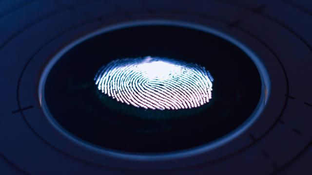

Passkey
Mengenal Passkey, Sistem Keamanan Pengganti Password di iOS 16
Kedatangan iPhone 14 bersama software terbaru Apple, iOS 16, telah membawa fitur passkey, sistem keamanan yang perlahan menggantikan fungsi password.
Techno.co.id - Google meluncurkan update untuk sejumlah aplikasi sehingga tampilan widget-nya lebih sesuai atau kompatible dengan lock screen iOS 16. Diumumkan bersamaan dengan iPhone 14, Apple merombak tampilan sistem operasinya dengan diluncurkannya iOS 16.
Salah satu fitur paling menjadi perhatian adalah opsi dimana pengguna iPhone bisa mengubah tampilan lock screen sehingga sesuai dengan selera mereka. Sayang, bagi pengguna iPhone yang memakai layanan Google harus berhadapan dengan tampilan widget yang kurang menarik atau sesuai dengan tema iOS 16. Menyadari hal tersebut, Google memutuskan untuk mengubah tampilan widget aplikasi populernya sehingga kompatible dengan lock screen di iPhone dengan iOS 16 tersebut.
Adapun widget tersebut, antara lain Search, Incognito Search, Voice Search, dan Chrome Dino Game, sebagaimana dilansir 9to5Google, Jumat (7/10/2022). Berikut cara menambahkan fitur ke lock screen iPhone.
Techno.co.id -Selain Chrome, Google Drive juga hadir dengan tiga pilihan widget, yaitu Suggested Files, Search, dan Starred. Suggested Files tampil menunjukkan file penting di dalam Drive, sedangkan Starred digunakan untuk mengakses file favorite. Untuk opsi Search akan membantu pengguna menemukan file dengan cepat.
Berbeda dengan opsi Starred dan Search yang memiliki ukuran 1 x 1, Suggested Files tampil dengan ukuran widget 2 x 1. Selain Chrome dan Drive, fitur dari Gmail dan Google Maps juga akan hadir pada waktu yang akan datang.
Techno.co.id -Beberapa model iPhone lama tidak memiliki perangkat keras yang mendukung penggunaan iOS 16 dan fitur-fitur terbarunya. Apple mengabarkan akan berhenti memproduksi iPhone 6S, iPhone 7, dan iPhone SE generasi pertama. Model ini mungkin kompatibel untuk software iOS 15.6.1, tetapi perangkat tidak akan mendapatkan iOS 16.
Berikut ini iPhone yang mendukung dan mendapatkan pembaruan software iOS 16.
Memperbarui perangkat lunak dibutuhkan setiap gadget, termasuk iPhone. Hal ini bisa membantu pengguna dan melindungi data digital mereka dari bahaya hacker.
Kedatangan iPhone 14 bersama software terbaru Apple, iOS 16, telah membawa fitur passkey, sistem keamanan yang perlahan menggantikan fungsi password.

Seorang pengguna Apple Watch Series 7 melaporkan perangkat jam pintar miliknya tiba-tiba panas saat dipakai, berasa, dan akhirnya meledak. Kejadian Apple Watch meledak ini menjadi perhatian perusahaan berbasis di Cupertiono tersebut, yang langsung melakukan penyelidikan.